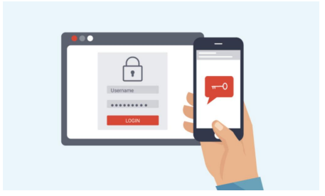

O 2FA é um procedimento de segurança que garante que serão necessários 2 fatores únicos para liberação de uma ação. O primeiro fator é a senha que o usuário e o segundo pode ser autenticado via token, via detecção de impressão digital, reconhecimento facial, código enviado via sms, entre outros.
Envie uma senha via SMS, voz ou e-mail para autenticação do usuário.
Adicione uma camada extra de segurança além da senha pessoal.
Ofereça maior segurança para usuários.
Reduza casos de fraude e invasões e evite o acesso a dados por invasores.
API simples e de rápida implementação.
Envio de OTP por meio de vários canais, incluindo SMS, voz ou e-mail.
100% dos bots automatizados,
99% dos ataques de phishing em massa,
e 66% dos ataques direcionados.